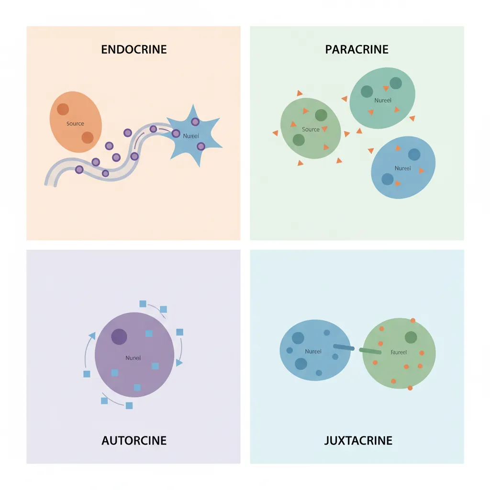
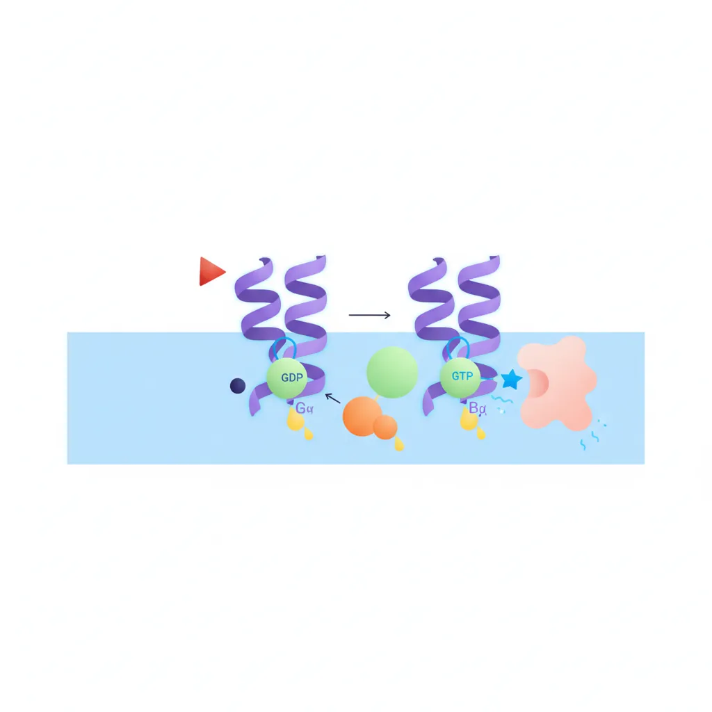
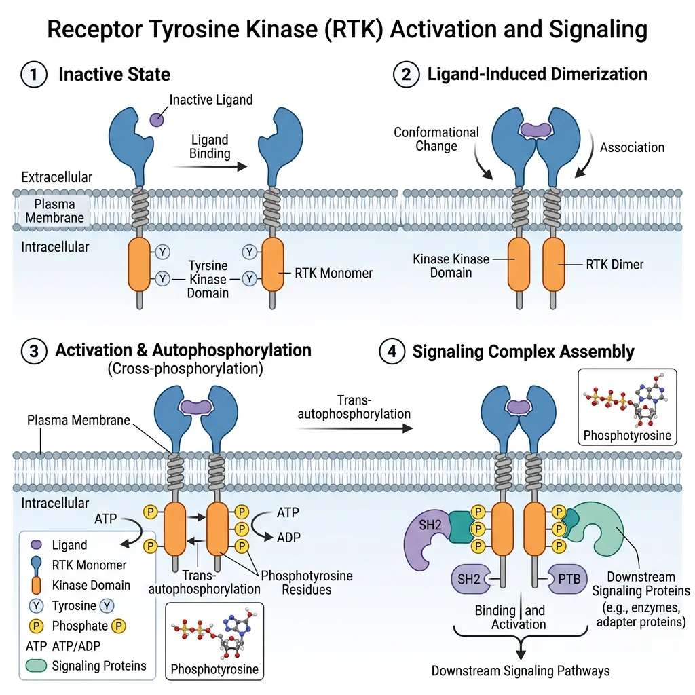
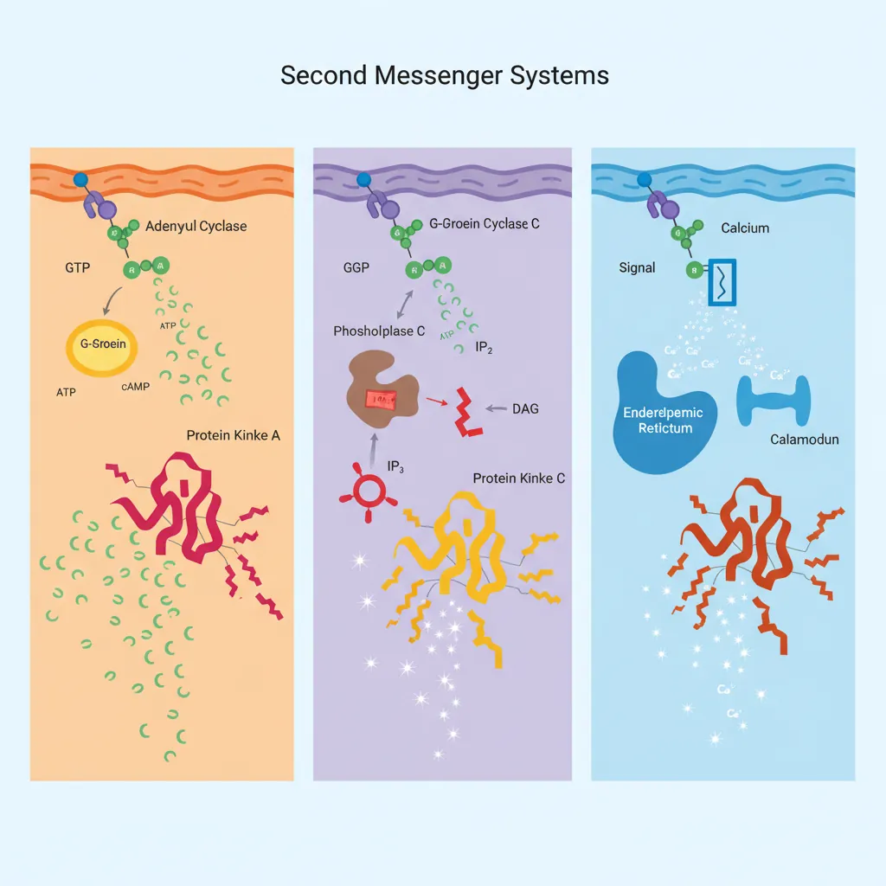
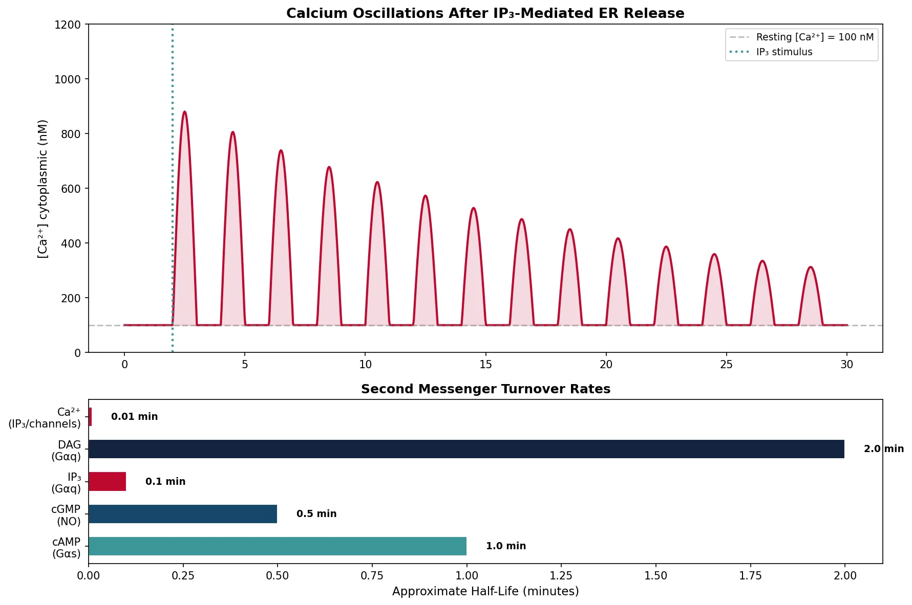
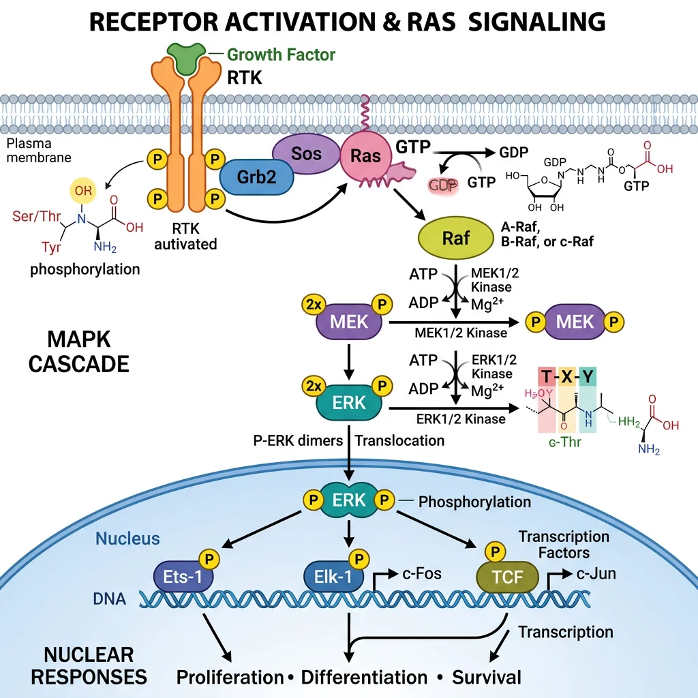
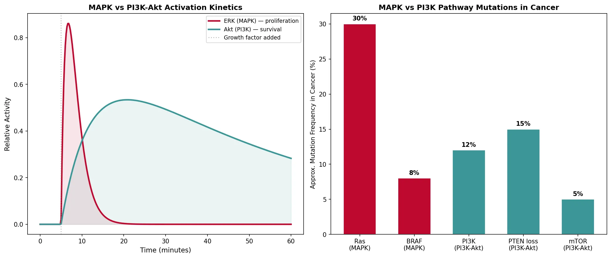
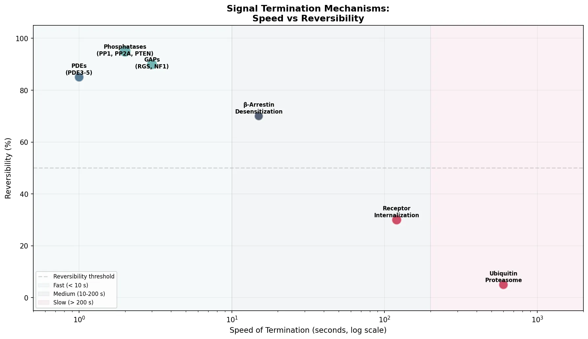

Biochemistry Mastery
Biological Chemistry Fundamentals
Atoms, bonds, functional groups, thermodynamicsWater, pH & Biological Buffers
Water polarity, pH, Henderson-Hasselbalch, blood buffersAmino Acids & Protein Structure
Amino acid classes, peptide bonds, protein foldingEnzymes & Catalysis
Kinetics, Michaelis-Menten, inhibition, regulationCarbohydrates & Lipids
Sugars, glycogen, fatty acids, cholesterol, membranesMetabolism & Bioenergetics
ATP, glycolysis, gluconeogenesis, redox carriersCitric Acid Cycle & Oxidative Phosphorylation
Acetyl-CoA, ETC, ATP synthase, oxygen dependenceSignal Transduction & Cell Communication
GPCRs, kinases, calcium, hormone cascadesNucleic Acids & Gene Expression
DNA, replication, transcription, translation, epigeneticsBrain & Nervous System Biochemistry
Neurotransmitters, ion gradients, myelin, neurodegenerationHeart & Muscle Biochemistry
Cardiac metabolism, actin-myosin, energy systemsLiver Biochemistry
Glucose homeostasis, detox, urea cycle, bileKidney Biochemistry & Acid-Base
pH regulation, ion transport, hormonal functionsEndocrine System Biochemistry
Hormone classes, signaling, glucose & stress controlDigestive System Biochemistry
Gastric acid, enzymes, bile, absorption, microbiomeImmune System Biochemistry
Antibodies, cytokines, complement, oxidative burstAdipose Tissue & Energy Balance
Triglycerides, lipolysis, leptin, obesityTissue-Specific Metabolism
Fed vs fasting, organ fuel selection, starvationMolecular Basis of Disease
Diabetes, cancer metabolism, neurodegenerationClinical Biochemistry & Diagnostics
Blood tests, liver/kidney markers, lipid panelsPrinciples of Cell Signaling
Cells in a multicellular organism do not operate in isolation — they constantly communicate with each other through chemical signals. A hormone released by the pancreas instructs liver cells to store glucose; a neurotransmitter released at a synapse triggers a muscle contraction; a growth factor tells a cell to divide. This molecular conversation — known as signal transduction — is how organisms coordinate the activities of trillions of cells.

Modes of Cell Signaling
Signaling is classified by the distance between the signaling cell and the target cell:
| Signaling Mode | Distance | Mechanism | Example |
|---|---|---|---|
| Endocrine | Long-range (whole body) | Hormone released into bloodstream | Insulin from pancreas → liver, muscle |
| Paracrine | Short-range (nearby cells) | Signal diffuses to neighboring cells | Growth factors, prostaglandins, histamine |
| Autocrine | Self (same cell) | Cell responds to its own signal | IL-2 in T-cell activation; cancer cells |
| Juxtacrine | Contact-dependent | Direct cell-cell contact (surface molecules) | Notch-Delta signaling in development |
| Synaptic | Across synapse (~20 nm) | Neurotransmitter crosses synaptic cleft | Acetylcholine at neuromuscular junction |
The General Signaling Paradigm
Despite enormous diversity in signals and responses, virtually all signaling pathways follow a common three-step logic:
Signal → Receptor → Response
Step 1 (Reception): A ligand (signal molecule) binds to a specific receptor on or in the target cell. Hydrophilic ligands (peptide hormones, growth factors) bind cell-surface receptors; hydrophobic ligands (steroid hormones, thyroid hormone) cross the membrane and bind intracellular receptors.
Step 2 (Transduction): The signal is relayed and amplified through a cascade of intracellular molecules — second messengers (cAMP, Ca²⁺, IP₃) and protein kinases that phosphorylate downstream targets.
Step 3 (Response): The final effectors produce a cellular response — gene expression changes, enzyme activation, cytoskeletal rearrangement, cell division, or apoptosis.
Signal Amplification
One of the most remarkable features of signaling cascades is amplification. A single hormone molecule binding to a receptor can trigger a cascade that activates millions of downstream molecules:
Earl Sutherland & the Discovery of cAMP
Earl Sutherland discovered cyclic AMP (cAMP) as the first "second messenger" while studying how epinephrine stimulates glycogen breakdown in liver cells. He showed that epinephrine doesn't enter the cell — instead, it activates adenylyl cyclase at the cell surface, which produces cAMP inside the cell. This cAMP then activates protein kinase A (PKA), which phosphorylates phosphorylase kinase, which activates glycogen phosphorylase. Each step amplifies the signal: 1 epinephrine molecule → ~100 cAMP → ~1,000 PKA → ~10,000 phosphorylase → ~100,000 glucose molecules released. Sutherland received the Nobel Prize in Physiology or Medicine in 1971.
Amplification Cascade: Epinephrine → Glycogen Breakdown
1 epinephrine → 1 receptor activation → ~100 Gα-GTP → ~10,000 cAMP molecules → ~100,000 active PKA subunits → ~10,000,000 glucose molecules released from glycogen. This 10⁷-fold amplification explains why nanomolar hormone concentrations can produce massive metabolic responses within seconds.
G-Protein Coupled Receptors
G-protein coupled receptors (GPCRs) are the largest family of cell-surface receptors in the human genome — over 800 GPCRs encoded, detecting everything from photons and odors to hormones and neurotransmitters. They are the target of approximately 34% of all FDA-approved drugs, making them the most pharmacologically important receptor family.

flowchart TD
LIG["Ligand
(hormone, neurotransmitter)"]
GPCR["GPCR
(7-transmembrane receptor)"]
GP["G-protein
Gα·GDP + Gβγ"]
LIG -->|"Binds"| GPCR
GPCR -->|"Conformational change"| GP
GP -->|"GDP → GTP exchange"| ACT["Gα·GTP
(active)"]
ACT --> AC["Adenylyl Cyclase
ATP → cAMP"]
ACT --> PLC["Phospholipase C
PIP2 → IP3 + DAG"]
AC --> PKA["Protein Kinase A
Phosphorylation cascade"]
PLC --> CA["IP3 → Ca²⁺ release"]
PLC --> PKCC["DAG → Protein Kinase C"]
PKA --> RESPONSE["Cellular Response
(gene expression,
metabolism, secretion)"]
CA --> RESPONSE
PKCC --> RESPONSE
style LIG fill:#132440,stroke:#132440,color:#fff
style ACT fill:#BF092F,stroke:#132440,color:#fff
style RESPONSE fill:#e8f4f4,stroke:#3B9797
GPCR Structure & Activation
All GPCRs share a characteristic structure: seven transmembrane α-helices (7-TM) that snake through the plasma membrane. The extracellular side binds the ligand; the intracellular side couples to a heterotrimeric G-protein (composed of Gα, Gβ, and Gγ subunits).
The G-Protein Cycle
1. Inactive state: Gα is bound to GDP; the Gαβγ trimer is associated with the receptor.
2. Ligand binding: The ligand binds the receptor, causing a conformational change that acts as a guanine nucleotide exchange factor (GEF) — Gα releases GDP and binds GTP.
3. Activation: Gα-GTP dissociates from Gβγ. Both Gα-GTP and Gβγ can activate downstream effectors (adenylyl cyclase, phospholipase C, ion channels).
4. Termination: Gα has intrinsic GTPase activity — it hydrolyzes GTP to GDP, returns to the inactive state, and reassociates with Gβγ. GTPase-activating proteins (GAPs) called RGS proteins accelerate this hydrolysis.
Lefkowitz & Kobilka: Solving the GPCR Structure
Robert Lefkowitz pioneered the study of adrenergic receptors in the 1970s using radioligand binding assays, eventually cloning the β₂-adrenergic receptor and revealing the seven-transmembrane topology shared by all GPCRs. His student Brian Kobilka solved the first high-resolution crystal structure of the β₂-adrenergic receptor bound to its G-protein in 2011 — capturing the receptor in its active conformation for the first time. Their work explained at atomic resolution how a hormone on the cell surface activates a G-protein inside the cell. They shared the Nobel Prize in Chemistry in 2012.
G-Protein Subtypes
The Gα subunit determines which downstream effector is activated. The three major families are:
| Gα Subtype | Effector | Second Messenger | Downstream Effect | Example Receptors |
|---|---|---|---|---|
| Gαs (stimulatory) | Adenylyl cyclase ↑ | cAMP ↑ | Activates PKA → gene expression, metabolism | β-adrenergic, glucagon, TSH |
| Gαi (inhibitory) | Adenylyl cyclase ↓ | cAMP ↓ | Opposes Gαs; also opens K⁺ channels | α₂-adrenergic, muscarinic M₂, opioid |
| Gαq | Phospholipase C (PLC) ↑ | IP₃ + DAG ↑ | Ca²⁺ release + PKC activation | α₁-adrenergic, muscarinic M₁/M₃, angiotensin II |
| Gα₁₂/₁₃ | Rho GEFs | RhoA-GTP | Cytoskeletal rearrangement, cell migration | Thrombin, LPA receptors |
Clinical Connection: Cholera & Pertussis Toxins
Cholera toxin (from Vibrio cholerae) ADP-ribosylates Gαs, locking it in the GTP-bound active state — adenylyl cyclase is permanently activated, cAMP levels skyrocket, and massive Cl⁻ and water secretion into the intestinal lumen causes life-threatening diarrhea. Pertussis toxin (from Bordetella pertussis) ADP-ribosylates Gαi, preventing it from inhibiting adenylyl cyclase — again elevating cAMP. In airway epithelial cells, this impairs mucociliary clearance, contributing to whooping cough. These toxins are also invaluable research tools for dissecting G-protein signaling.
Receptor Tyrosine Kinases
Receptor tyrosine kinases (RTKs) are a second major class of cell-surface receptors that govern growth, proliferation, differentiation, and survival. Unlike GPCRs (which use G-proteins as intermediaries), RTKs have intrinsic enzyme activity — their intracellular domain is a tyrosine kinase that phosphorylates itself and downstream substrates.

RTK Activation: Dimerization & Autophosphorylation
The canonical activation mechanism involves three steps:
RTK Activation Steps
1. Ligand binding: Growth factor (e.g., EGF, insulin, PDGF) binds the extracellular domain.
2. Dimerization: Two receptor monomers come together to form a dimer (some, like insulin receptor, are pre-formed dimers that rearrange upon ligand binding).
3. Autophosphorylation: Each kinase domain phosphorylates specific tyrosine residues on the partner receptor's intracellular tail. These phosphotyrosines serve as docking sites for proteins containing SH2 (Src Homology 2) or PTB (Phosphotyrosine-Binding) domains.
| RTK Family | Ligand | Key Downstream Pathways | Cellular Response | Cancer Connection |
|---|---|---|---|---|
| EGFR (ErbB/HER) | EGF, TGF-α | Ras-MAPK, PI3K-Akt | Proliferation, survival | Overexpressed in lung, breast cancer |
| Insulin receptor | Insulin, IGF-1 | PI3K-Akt-mTOR, Ras-MAPK | Glucose uptake, protein synthesis | Insulin resistance in type 2 diabetes |
| PDGFR | PDGF | Ras-MAPK, PI3K, PLCγ | Wound healing, cell growth | Imatinib target (GIST tumors) |
| VEGFR | VEGF | PI3K-Akt, MAPK | Angiogenesis | Bevacizumab (anti-VEGF) for cancer |
| FGFR | FGF | Ras-MAPK, PLCγ | Development, differentiation | Mutations in skeletal disorders |
Downstream Signaling
Once the RTK is phosphorylated, adaptor proteins dock onto its phosphotyrosines and initiate branching signaling cascades. The two most important pathways are the Ras-MAPK pathway (cell proliferation) and the PI3K-Akt pathway (cell survival) — covered in detail in Section 5.
Oncogenes & RTK Mutations
RTK mutations that cause constitutive (always-on) kinase activity are among the most common genetic drivers of cancer. Examples: HER2/ErbB2 amplification in ~20% of breast cancers (target of trastuzumab/Herceptin), BCR-ABL fusion in chronic myeloid leukemia (target of imatinib/Gleevec), EGFR activating mutations in non-small cell lung cancer (target of erlotinib, gefitinib). These discoveries launched the era of targeted cancer therapy — designing drugs that specifically inhibit the mutant kinase.
Second Messengers
Second messengers are small, diffusible intracellular molecules that relay and amplify signals from cell-surface receptors to effector proteins inside the cell. They are called "second" because the extracellular ligand is the "first messenger." Second messengers enable speed (generated in milliseconds), amplification (one enzyme produces thousands of molecules), and spatial spread (they diffuse throughout the cytoplasm).

| Second Messenger | Produced By | Degraded By | Key Target | Activated By |
|---|---|---|---|---|
| cAMP | Adenylyl cyclase (from ATP) | Phosphodiesterase (PDE) → AMP | PKA (protein kinase A) | Gαs-coupled GPCRs |
| cGMP | Guanylyl cyclase (from GTP) | PDE5 → GMP | PKG, CNG ion channels | Nitric oxide (NO), ANP |
| IP₃ | PLC (cleaves PIP₂) | Phosphatases → inositol | IP₃ receptor (ER Ca²⁺ channel) | Gαq-coupled GPCRs, RTKs |
| DAG | PLC (cleaves PIP₂) | DAG lipase / kinase | PKC (protein kinase C) | Gαq-coupled GPCRs |
| Ca²⁺ | Released from ER (by IP₃) or extracellular influx | SERCA pump, Na⁺/Ca²⁺ exchanger | Calmodulin → CaMK, calcineurin | IP₃, voltage-gated channels |
The cAMP-PKA Pathway
The cAMP pathway is the prototypical second messenger cascade. When a Gαs-coupled GPCR is activated (e.g., by epinephrine, glucagon), Gαs-GTP activates adenylyl cyclase, which converts ATP to cAMP. cAMP binds the regulatory subunits of PKA (protein kinase A), releasing the catalytic subunits to phosphorylate serine/threonine residues on target proteins.
PKA Target Diversity
PKA phosphorylates different targets in different cell types, explaining why the same hormone (epinephrine) produces different responses:
Liver: PKA → phosphorylase kinase → glycogen phosphorylase → glycogen breakdown (glucose release)
Heart: PKA → L-type Ca²⁺ channels → increased contractility and heart rate
Adipose: PKA → hormone-sensitive lipase → triglyceride breakdown (lipolysis)
Kidney: PKA → aquaporin-2 insertion → water reabsorption (ADH response)
The response depends on which PKA substrates are expressed in each cell type.
cAMP Degradation: Phosphodiesterases
Phosphodiesterases (PDEs) hydrolyze cAMP to AMP, terminating the signal. There are 11 PDE families with tissue-specific distribution, making them important drug targets:
- PDE3 inhibitor (milrinone): Increases cardiac cAMP → used in heart failure
- PDE4 inhibitor (roflumilast): Anti-inflammatory for COPD
- PDE5 inhibitor (sildenafil/Viagra): Increases cGMP → smooth muscle relaxation → vasodilation
- Caffeine: Non-selective PDE inhibitor → prolongs cAMP/cGMP signals → increased alertness
IP₃, DAG & Calcium Signaling
When Gαq-coupled GPCRs are activated (e.g., by angiotensin II, histamine, vasopressin V₁), Gαq-GTP activates phospholipase C (PLC), which cleaves the membrane phospholipid PIP₂ into two second messengers simultaneously:
PLC Reaction: One Substrate, Two Messengers
PIP₂ → IP₃ + DAG (catalyzed by phospholipase C)
IP₃ (inositol 1,4,5-trisphosphate): Water-soluble → diffuses to ER → binds IP₃ receptor (a Ca²⁺ channel on the ER membrane) → releases Ca²⁺ from ER stores into cytoplasm.
DAG (diacylglycerol): Lipid-soluble → stays in membrane → activates protein kinase C (PKC) in the presence of Ca²⁺ and phosphatidylserine.
Calcium as Universal Messenger
Ca²⁺ is arguably the most versatile second messenger in biology. Resting cytoplasmic [Ca²⁺] is kept extremely low (~100 nM) by active pumping into the ER (SERCA pump) and out of the cell (plasma membrane Ca²⁺-ATPase). Upon signaling, [Ca²⁺] can spike to ~1 μM — a 10-fold increase that activates calcium-binding proteins:
| Ca²⁺ Effector | Mechanism | Downstream Target | Cellular Response |
|---|---|---|---|
| Calmodulin (CaM) | Ca²⁺ binding → conformational change → binds target proteins | CaM kinases (CaMK I, II, IV), calcineurin, eNOS | Gene expression, synaptic plasticity, NO production |
| Troponin C | Ca²⁺ binding → exposes myosin-binding sites on actin | Troponin complex → tropomyosin shift | Muscle contraction |
| Synaptotagmin | Ca²⁺ binding → triggers vesicle fusion with membrane | SNARE complex | Neurotransmitter release at synapses |
| PKC | Ca²⁺ + DAG → PKC activation | Various serine/threonine substrates | Proliferation, gene expression, secretion |
import numpy as np
import matplotlib.pyplot as plt
# Simulate calcium oscillations after IP3 stimulation
time = np.linspace(0, 30, 1000) # 30 seconds
calcium_resting = 0.1 # μM baseline
# Calcium oscillation pattern (simplified model)
freq = 0.5 # Hz
amplitude = 0.8 # μM above baseline
# Decaying oscillations after stimulus at t=2
stimulus = np.where(time >= 2, 1, 0)
decay = np.exp(-0.05 * (time - 2)) * stimulus
oscillation = amplitude * decay * np.maximum(0, np.sin(2 * np.pi * freq * (time - 2))) * stimulus
calcium = calcium_resting + oscillation
fig, (ax1, ax2) = plt.subplots(2, 1, figsize=(12, 8), gridspec_kw={'height_ratios': [2, 1]})
# Top: Calcium oscillations
ax1.plot(time, calcium * 1000, color='#BF092F', linewidth=2)
ax1.axhline(y=100, color='gray', linestyle='--', alpha=0.5, label='Resting [Ca²⁺] = 100 nM')
ax1.axvline(x=2, color='#3B9797', linestyle=':', linewidth=2, label='IP₃ stimulus')
ax1.fill_between(time, 100, calcium * 1000, alpha=0.15, color='#BF092F')
ax1.set_ylabel('[Ca²⁺] cytoplasmic (nM)', fontsize=11)
ax1.set_title('Calcium Oscillations After IP₃-Mediated ER Release', fontsize=13, fontweight='bold')
ax1.legend(fontsize=9)
ax1.set_ylim(0, 1200)
# Bottom: Second messenger comparison
messengers = ['cAMP\n(Gαs)', 'cGMP\n(NO)', 'IP₃\n(Gαq)', 'DAG\n(Gαq)', 'Ca²⁺\n(IP₃/channels)']
half_life = [1.0, 0.5, 0.1, 2.0, 0.01] # minutes (approximate)
colors = ['#3B9797', '#16476A', '#BF092F', '#132440', '#BF092F']
ax2.barh(messengers, half_life, color=colors, edgecolor='white', height=0.6)
for i, v in enumerate(half_life):
ax2.text(v + 0.05, i, f'{v} min', va='center', fontsize=9, fontweight='bold')
ax2.set_xlabel('Approximate Half-Life (minutes)', fontsize=11)
ax2.set_title('Second Messenger Turnover Rates', fontsize=12, fontweight='bold')
plt.tight_layout()
plt.savefig('calcium_oscillations.png', dpi=150, bbox_inches='tight')
plt.show()
print("Ca²⁺ signals are fast (ms) and oscillatory — frequency encodes information")
print("cAMP persists longer (seconds) for sustained metabolic responses")

MAPK & PI3K Signaling Cascades
Two of the most important intracellular signaling cascades — Ras-MAPK and PI3K-Akt — are activated downstream of RTKs (and some GPCRs). These pathways control cell proliferation, survival, growth, and differentiation, and their dysregulation is central to cancer biology.

The Ras-MAPK Cascade
The Ras-Raf-MEK-ERK pathway (also called the MAPK/ERK pathway) is a kinase cascade where each protein phosphorylates and activates the next, achieving massive signal amplification:
MAPK Cascade: A Four-Tier Kinase Relay
Step 1 — Ras activation: RTK autophosphorylation → GRB2 adaptor (SH2 domain) → SOS (a GEF) → catalyzes Ras-GDP → Ras-GTP
Step 2 — Raf (MAPKKK): Ras-GTP recruits and activates Raf (MAP kinase kinase kinase) at the membrane
Step 3 — MEK (MAPKK): Raf phosphorylates MEK1/2 (MAP kinase kinase) — dual-specificity kinase
Step 4 — ERK (MAPK): MEK phosphorylates ERK1/2 (MAP kinase) on Thr and Tyr — ERK enters nucleus
Output: ERK phosphorylates transcription factors (Elk-1, c-Fos, c-Myc) → gene expression → proliferation
Ras: The Most Commonly Mutated Oncogene
Ras mutations are found in approximately 30% of all human cancers — making Ras the single most frequently mutated oncogene family. The three Ras genes (KRAS, NRAS, HRAS) encode small GTPases that act as molecular switches. Oncogenic mutations (most commonly at codons 12, 13, or 61) lock Ras in the GTP-bound "always on" state by preventing GTPase activity.
KRAS mutations: ~90% of pancreatic cancers, ~35% of colorectal, ~25% of lung adenocarcinomas. For decades, Ras was considered "undruggable" due to its smooth surface and picomolar GTP affinity. In 2021, the landmark drug sotorasib (Lumakras™) became the first FDA-approved KRAS inhibitor, targeting the specific KRAS G12C mutation by covalently binding the mutant cysteine residue.
| MAPK Component | Full Name | Cancer-Associated Mutations | Targeted Drug | Approved For |
|---|---|---|---|---|
| KRAS G12C | Kirsten Ras GTPase | Constitutively active (locked ON) | Sotorasib, Adagrasib | NSCLC (2021) |
| BRAF V600E | B-Raf kinase | Constitutively active kinase | Vemurafenib, Dabrafenib | Melanoma (2011) |
| MEK1/2 | MAP kinase kinase | Rarely mutated; drug target | Trametinib, Cobimetinib | Melanoma (combination) |
| ERK1/2 | Extracellular signal-regulated kinase | Rarely mutated directly | Ulixertinib (trials) | Clinical trials |
PI3K-Akt-mTOR Pathway
The PI3K-Akt-mTOR pathway is the primary signaling cascade for cell survival, growth, and metabolism. Activated downstream of RTKs and some GPCRs, this pathway promotes anabolic processes and inhibits apoptosis:
PI3K-Akt Cascade: The Survival Pathway
Step 1: RTK autophosphorylation recruits PI3K (phosphoinositide 3-kinase) via its SH2-domain regulatory subunit (p85)
Step 2: PI3K catalytic subunit (p110) phosphorylates PIP₂ → PIP₃ (a membrane lipid second messenger)
Step 3: PIP₃ recruits Akt/PKB and PDK1 to the membrane via their PH (pleckstrin homology) domains
Step 4: PDK1 and mTORC2 phosphorylate and fully activate Akt
Akt targets: Phosphorylates mTORC1 (protein synthesis), Bad (anti-apoptotic), GSK3β (glycogen synthesis), FOXO (cell cycle arrest OFF)
PTEN: The Critical Tumor Suppressor
PTEN (phosphatase and tensin homolog) is the phosphatase that converts PIP₃ back to PIP₂, acting as the OFF switch for PI3K signaling. PTEN is the second most commonly mutated tumor suppressor (after p53). Loss of PTEN → constitutive PIP₃ → hyperactive Akt → uncontrolled growth and survival. PTEN mutations are found in ~40% of endometrial cancers, ~30% of glioblastomas, and ~15% of prostate cancers. Rapamycin (sirolimus) and its analogs (everolimus, temsirolimus) inhibit mTOR downstream of Akt, used in renal cell carcinoma and organ transplant immunosuppression.
import numpy as np
import matplotlib.pyplot as plt
# Compare MAPK and PI3K-Akt pathway activation kinetics
time = np.linspace(0, 60, 300) # 60 minutes
stimulus_on = 5 # minutes
# MAPK (ERK) - fast onset, transient
erk_peak = 1.0
erk_onset = 2.0 # minutes to peak
erk_decay = 0.08 # decay rate
t_adj = time - stimulus_on
erk_activity = np.where(t_adj >= 0,
erk_peak * (t_adj / erk_onset) * np.exp(1 - t_adj / erk_onset) * np.exp(-erk_decay * t_adj),
0)
# Akt - slower onset, more sustained
akt_peak = 0.85
akt_onset = 8.0
akt_decay = 0.02
akt_activity = np.where(t_adj >= 0,
akt_peak * (1 - np.exp(-t_adj / akt_onset)) * np.exp(-akt_decay * t_adj),
0)
fig, (ax1, ax2) = plt.subplots(1, 2, figsize=(14, 6))
# Left: Time course comparison
ax1.plot(time, erk_activity, color='#BF092F', linewidth=2.5, label='ERK (MAPK) — proliferation')
ax1.plot(time, akt_activity, color='#3B9797', linewidth=2.5, label='Akt (PI3K) — survival')
ax1.axvline(x=stimulus_on, color='gray', linestyle=':', alpha=0.5, label='Growth factor added')
ax1.fill_between(time, erk_activity, alpha=0.1, color='#BF092F')
ax1.fill_between(time, akt_activity, alpha=0.1, color='#3B9797')
ax1.set_xlabel('Time (minutes)', fontsize=11)
ax1.set_ylabel('Relative Activity', fontsize=11)
ax1.set_title('MAPK vs PI3K-Akt Activation Kinetics', fontsize=12, fontweight='bold')
ax1.legend(fontsize=9)
# Right: Cancer pathway mutation frequency
pathways = ['Ras\n(MAPK)', 'BRAF\n(MAPK)', 'PI3K\n(PI3K-Akt)', 'PTEN loss\n(PI3K-Akt)', 'mTOR\n(PI3K-Akt)']
frequencies = [30, 8, 12, 15, 5]
colors = ['#BF092F', '#BF092F', '#3B9797', '#3B9797', '#3B9797']
bars = ax2.bar(pathways, frequencies, color=colors, edgecolor='white', width=0.6)
for bar, val in zip(bars, frequencies):
ax2.text(bar.get_x() + bar.get_width()/2, bar.get_height() + 0.5, f'{val}%',
ha='center', fontsize=10, fontweight='bold')
ax2.set_ylabel('Approx. Mutation Frequency in Cancer (%)', fontsize=10)
ax2.set_title('MAPK vs PI3K Pathway Mutations in Cancer', fontsize=12, fontweight='bold')
plt.tight_layout()
plt.savefig('mapk_pi3k_comparison.png', dpi=150, bbox_inches='tight')
plt.show()
print("MAPK: Fast, transient → drives proliferation (minutes)")
print("PI3K-Akt: Slower, sustained → drives survival (hours)")
print("Both pathways frequently mutated in cancer")

Signal Integration & Cross-Talk
Real cells receive dozens of signals simultaneously — growth factors, hormones, cytokines, extracellular matrix contacts, and cell-cell interactions. The cell must integrate all these inputs to make a unified decision: divide, differentiate, migrate, or die. Signaling pathways don't operate in isolation — they interact extensively through cross-talk.
Convergence, Divergence & Cross-Talk
Signal convergence: Multiple different receptors activate the same downstream pathway. Example: Both Gαs-GPCRs and RTKs can activate Ras-MAPK.
Signal divergence: One receptor activates multiple pathways simultaneously. Example: RTKs activate MAPK, PI3K-Akt, PLCγ, and STAT pathways from a single autophosphorylation event.
Cross-talk: Pathway A modulates pathway B. Example: Akt (PI3K pathway) phosphorylates and inhibits Raf (MAPK pathway), creating a negative feedback that fine-tunes proliferation.
Scaffold proteins: Organize multiple kinases on a single platform (e.g., KSR for MAPK cascade, AKAP for PKA), ensuring specificity and speed by preventing cross-activation.
| Integration Mechanism | Example | Purpose | Biological Outcome |
|---|---|---|---|
| Scaffold proteins | KSR (kinase suppressor of Ras) — holds Raf, MEK, ERK together | Ensures pathway fidelity and speed | Prevents crosstalk with other MAPK modules (JNK, p38) |
| Feedback loops | ERK phosphorylates SOS → terminates Ras activation (negative) | Signal attenuation, oscillatory dynamics | Prevents excessive proliferation |
| Feed-forward loops | EGF → ERK → immediate-early genes → delayed-early genes | Temporal filtering (ignores transient signals) | Commits to proliferation only for sustained signals |
| Coincidence detection | PKC requires both Ca²⁺ AND DAG for activation | Ensures response only when two signals coincide | Reduces false activation from noise |
| Threshold effects | Ultrasensitive switch: ~70% of MAP kinase phosphorylated or ~0% | Converts graded input to all-or-none response | Sharp cellular decisions (divide vs. don't) |
Signal Termination
Signal termination is just as important as signal initiation. Without active signal shutoff, pathways would remain permanently activated — a hallmark of cancer. Cells employ multiple overlapping termination mechanisms:
| Termination Mechanism | Target Pathway | How It Works | Speed | Clinical Relevance |
|---|---|---|---|---|
| Phosphatases | All kinase cascades | Remove phosphate groups added by kinases (PP1, PP2A, PTP1B) | Seconds | PTEN (lipid phosphatase) → tumor suppressor |
| GTPase-activating proteins (GAPs) | Ras, heterotrimeric G proteins | Accelerate intrinsic GTPase → GTP → GDP (OFF state) | Seconds | RGS proteins terminate GPCR signaling; NF1 inactivates Ras |
| Phosphodiesterases (PDEs) | cAMP, cGMP | Hydrolyze cyclic nucleotides → AMP/GMP | Seconds | PDE5 inhibitors (sildenafil) prolong cGMP |
| Receptor internalization | RTKs, GPCRs | Clathrin-coated pits → endosome → lysosomal degradation | Minutes | EGFR downregulation attenuates growth signals |
| Ubiquitination / proteasomal degradation | Signaling proteins | Ubiquitin tags mark proteins for 26S proteasome destruction | Minutes-hours | IκB degradation activates NF-κB; Cbl ubiquitinates RTKs |
| β-Arrestin desensitization | GPCRs | GRK phosphorylation → β-arrestin binding → blocks G protein coupling | Seconds-minutes | Explains drug tolerance (e.g., opioid receptor desensitization) |
Signaling Pathways as Drug Targets: The Precision Medicine Revolution
Understanding signal transduction has transformed cancer therapy from blunt cytotoxic chemotherapy to precision-targeted drugs. The paradigm shift began with imatinib (Gleevec, 2001) — a small molecule inhibiting the BCR-ABL tyrosine kinase in chronic myeloid leukemia (CML), achieving ~95% complete response in chronic phase. Since then, over 80 targeted kinase inhibitors have been FDA-approved. As of 2024, signaling pathway inhibitors target: RTKs (gefitinib, erlotinib, lapatinib), BRAF (vemurafenib, dabrafenib), MEK (trametinib), PI3K (alpelisib), mTOR (everolimus), CDK4/6 (palbociclib), JAK (ruxolitinib), and BTK (ibrutinib). Drug resistance remains a major challenge — tumors often rewire signaling networks, activating bypass pathways or acquiring gatekeeper mutations.
import numpy as np
import matplotlib.pyplot as plt
# Signal termination mechanisms: speed vs reversibility
mechanisms = ['Phosphatases\n(PP1, PP2A, PTEN)', 'GAPs\n(RGS, NF1)',
'PDEs\n(PDE3-5)', 'β-Arrestin\nDesensitization',
'Receptor\nInternalization', 'Ubiquitin\nProteasome']
speed_seconds = [2, 3, 1, 15, 120, 600] # approximate time constants
reversibility = [95, 90, 85, 70, 30, 5] # percent reversible
fig, ax = plt.subplots(figsize=(12, 7))
# Bubble chart: x=speed (log scale), y=reversibility, size=importance
importance = [300, 250, 200, 180, 220, 200]
colors = ['#3B9797', '#3B9797', '#16476A', '#132440', '#BF092F', '#BF092F']
scatter = ax.scatter(speed_seconds, reversibility, s=importance, c=colors,
alpha=0.7, edgecolors='white', linewidth=2, zorder=3)
for i, mech in enumerate(mechanisms):
offset_y = 4 if reversibility[i] < 90 else -6
ax.annotate(mech, (speed_seconds[i], reversibility[i]),
textcoords="offset points", xytext=(0, offset_y),
ha='center', fontsize=8, fontweight='bold')
ax.set_xscale('log')
ax.set_xlabel('Speed of Termination (seconds, log scale)', fontsize=11)
ax.set_ylabel('Reversibility (%)', fontsize=11)
ax.set_title('Signal Termination Mechanisms:\nSpeed vs Reversibility', fontsize=13, fontweight='bold')
ax.set_xlim(0.5, 2000)
ax.set_ylim(-5, 105)
ax.axhline(y=50, color='gray', linestyle='--', alpha=0.3, label='Reversibility threshold')
# Add regions
ax.axvspan(0.5, 10, alpha=0.05, color='#3B9797', label='Fast (< 10 s)')
ax.axvspan(10, 200, alpha=0.05, color='#16476A', label='Medium (10-200 s)')
ax.axvspan(200, 2000, alpha=0.05, color='#BF092F', label='Slow (> 200 s)')
ax.legend(loc='lower left', fontsize=8)
ax.grid(True, alpha=0.2)
plt.tight_layout()
plt.savefig('signal_termination.png', dpi=150, bbox_inches='tight')
plt.show()
print("Fast + reversible: phosphatases, GAPs (fine-tuning)")
print("Slow + irreversible: ubiquitin-proteasome (permanent shutoff)")
print("Receptor internalization: moderate speed, partially irreversible")

Practice Exercises
Exercise 1: Second Messenger Identification
For each scenario, identify the primary second messenger(s) involved: (a) Epinephrine binds β₂-adrenergic receptor on liver cells → glycogen breakdown. (b) Vasopressin binds V₁ receptor on vascular smooth muscle → contraction. (c) Nitric oxide diffuses into smooth muscle cells → relaxation.
View Answer
(a) cAMP: β₂-adrenergic → Gαs → adenylyl cyclase → cAMP → PKA → phosphorylase kinase → glycogen phosphorylase. (b) IP₃ and Ca²⁺: V₁ → Gαq → PLC → IP₃ → Ca²⁺ release from ER → calmodulin → MLCK → contraction. (c) cGMP: NO → soluble guanylyl cyclase → cGMP → PKG → smooth muscle relaxation (vasodilation).
Exercise 2: Cholera vs Pertussis Toxin
Explain why cholera toxin causes massive water secretion in the intestine, while pertussis toxin causes whooping cough. What do both toxins do at the molecular level, and why are their clinical effects so different?
View Answer
Cholera toxin ADP-ribosylates Gαs, locking it in the GTP-bound (active) state → permanent adenylyl cyclase activation → ↑↑↑ cAMP in intestinal epithelial cells → opens CFTR chloride channels → massive Cl⁻ and water secretion → profuse watery diarrhea. Pertussis toxin ADP-ribosylates Gαi, preventing it from inhibiting adenylyl cyclase → ↑ cAMP in immune cells (neutrophils) → impaired chemotaxis (immune cell migration to infection site) → bacteria persist in airways → inflammation → whooping cough. Both increase cAMP, but in different cell types with different downstream effects.
Exercise 3: MAPK Cascade Amplification
If one growth factor molecule activates one RTK, and each Ras activates 10 Raf molecules, each Raf activates 10 MEK molecules, and each MEK activates 10 ERK molecules, calculate the total signal amplification. Why is this kinase cascade architecture advantageous compared to a single-step activation?
View Answer
Total amplification: 1 × 10 × 10 × 10 = 1,000-fold (10³) from the kinase cascade alone (additional amplification from ERK phosphorylating multiple transcription factors). Advantages of cascade architecture: (1) Massive amplification at each tier; (2) Multiple regulation points — each level can be independently modulated by phosphatases; (3) Scaffold proteins ensure specificity to prevent cross-talk; (4) Ultrasensitive switch behavior — Hill coefficient >1 makes responses nearly all-or-none; (5) Different kinetics at each level allow temporal filtering.
Exercise 4: Cancer Drug Resistance
A melanoma patient with a BRAF V600E mutation responds initially to vemurafenib (BRAF inhibitor) but relapses after 6 months. Propose two molecular mechanisms of resistance involving signaling pathway rewiring. How would you design a combination therapy to overcome this?
View Answer
Resistance mechanism 1: Activating mutation in MEK (downstream of BRAF) — bypasses BRAF inhibition since MEK is constitutively active. Mechanism 2: Upregulation of RTK (e.g., PDGFR, EGFR) → activates PI3K-Akt pathway independently of MAPK → provides alternative survival signals. Combination therapy: BRAF inhibitor (dabrafenib) + MEK inhibitor (trametinib) blocks the vertical cascade. For PI3K bypass: add PI3K or mTOR inhibitor. This is why BRAF + MEK combination is now standard of care for BRAF-mutant melanoma, showing improved progression-free survival over single-agent BRAF inhibition.
Exercise 5: Signal Termination Failure
A patient has a homozygous loss-of-function mutation in the NF1 gene (neurofibromatosis type 1). NF1 encodes neurofibromin, a Ras-GAP. Predict the molecular consequences and explain why NF1 patients develop benign tumors (neurofibromas) and have increased risk of certain cancers.
View Answer
NF1/neurofibromin is a Ras-GAP that accelerates Ras GTPase activity (Ras-GTP → Ras-GDP). Loss of NF1 → Ras stays in the active GTP-bound state for longer (impaired signal termination) → prolonged MAPK & PI3K-Akt activation → excessive cell proliferation and survival. This acts as a tumor suppressor loss: NF1 patients develop multiple neurofibromas (Schwann cell tumors) and have ↑ risk of malignant peripheral nerve sheath tumors, optic gliomas, and juvenile myelomonocytic leukemia. This demonstrates that GAP-mediated signal termination is essential for preventing oncogenesis — Ras doesn't need to be mutated if its OFF-switch is broken.
Signal Transduction Analysis Worksheet
Signal Transduction Pathway Analyzer
Analyze a signaling pathway of your choice. Download as Word, Excel, or PDF.
Conclusion & Next Steps
Signal transduction is the molecular language of cellular communication. From the binding of a single hormone molecule to the activation of thousands of downstream effectors, signaling cascades enable cells to sense their environment, amplify critical messages, and make complex decisions about growth, survival, and differentiation. The key themes are universality (cAMP, Ca²⁺, and phosphorylation are used by virtually all cells), modularity (the same kinase cascade can serve different functions in different contexts), and clinical relevance (defective signaling underlies cancer, diabetes, heart disease, and neurological disorders).
Understanding these pathways has launched the era of precision medicine, where targeted kinase inhibitors, antibody therapies, and pathway-specific drugs treat diseases at their molecular root rather than with blunt cytotoxic approaches.